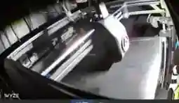

The Challenge
Running and improving multiple 3D printers calls for compatible firmware, reliable bed leveling, accessible monitoring, capable slicing software and safe configuration changes.
My Approach
Ender 3 S1 Pro
- Configured Klipper firmware on an Ender 3 S1 Pro and worked with BLTouch-assisted bed leveling.
- Set up Mainsail and Fluidd interfaces with Crowsnest camera monitoring.
- Used OrcaSlicer within the slicing and printer-control workflow.
- Enabled remote print monitoring through private home-network access, without a separate paid remote-printing subscription.
Creality K2 SE Combo
- Worked with Klipper/Fluidd access, printer monitoring and troubleshooting on the K2 SE Combo.
- Integrated a Wyze camera feed through Docker and Wyze Bridge, checking stream quality and snapshots.
- Explored CFS multi-color workflow configuration and printer diagnostics.
- Created and verified backups before system modifications.
Related project: Home Networking & Remote VPN Access.

Results & Impact
The printing lab became a more accessible and maintainable environment across both the Klipper-modified Ender 3 S1 Pro and the Creality K2 SE Combo. Bringing printer controls, camera feeds and service diagnostics together made experimentation easier to manage without constant physical checks.
- Control from a clearer interface. Klipper, Mainsail and Fluidd made it easier to review printer status, settings and diagnostics from a browser instead of relying only on a printer's built-in controls.
- More practical remote monitoring. Camera streams and private remote access enabled checking print progress while away from the printer, reducing unnecessary trips just to see whether a job is still running.
- Earlier awareness of print problems. Live snapshots and monitoring tools made visible issues easier to notice so a failing print could be investigated sooner, helping avoid unnecessary wasted printing time and material.
- A repeatable print-preparation workflow. Combining bed-leveling configuration, OrcaSlicer and printer administration created a more structured route from slicer settings to monitored execution.
- Safer changes and faster recovery. Verified backups before configuration work reduced the risk of losing known-working settings, allowing firmware and camera integrations to be tested more confidently.
The main improvement was practical reliability and control: multiple printers could be managed with clearer visibility, documented configuration and fewer avoidable interruptions during technical experimentation.